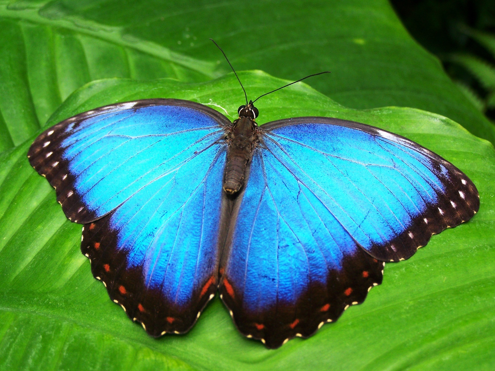
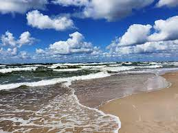
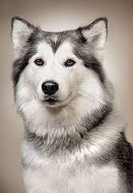
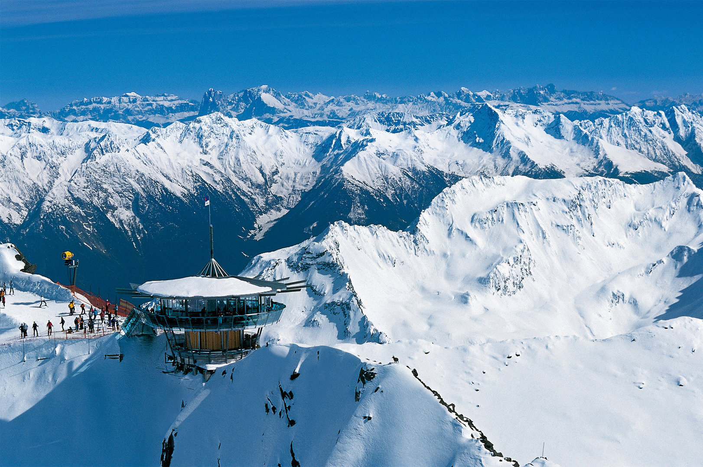
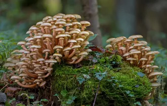
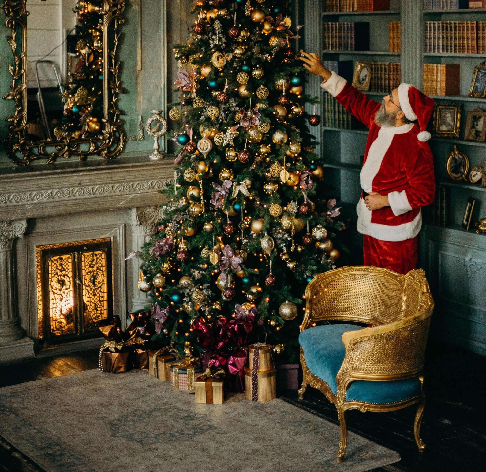

Vėdrynas (Ranunculus)- vėdryninių (Ranunculaceae) šeimos augalų gentis. Pavadinimas iš lot. rana -
varlė, ranunculus – varliūkštis (keletas rūšių auga stovinčiame, varlių gyvenamajame vandenyje). Tai
vienamečiai arba žoliniai augalai su pirštiškai ar plunksniškai skaldytais lapais. Žiedai geltoni, pavieniai
arba po keletą susibūrę į žiedynus. Kuokelių ir piestelių daug. Vaisiai - riešutėliai. Augalus apdulkina
vabzdžiai. Visos vėdryno rūšys yra nuodingos.
Vėdrynų rūšys
Pavasarinis švitriešis (Ranunculus ficaria)
Aitrusis vėdrynas (Ranunculus acris)
Dirvinis vėdrynas (Ranunculus arvensis)
Auksakuodis vėdrynas (Ranunculus auricomus)
Gumbuotasis vėdrynas (Ranunculus bulbosus)
Kašubinis vėdrynas (Ranunculus cassubicus)
Dedervinis vėdrynas (Ranunculus flammula)
Vilnotasis vėdrynas (Ranunculus lanuginosus)
Pelkinis vėdrynas (Ranunculus lingua)
Vagotasis vėdrynas (Ranunculus polyanthemus)
Drugeliai

Morpho peleides, the Peleides blue morpho, common morpho or the emperor is an iridescent
tropical butterfly found in Mexico, Central America, northern South America, Paraguay and Trinidad. Most
authorities believe that peleides is a subspecies of Morpho helenor.
The brilliant blue color in the butterfly's wings is caused by the diffraction of the light from millions of
tiny scales on its wings. It uses this to frighten away predators, by flashing its wings rapidly.
The wingspan of the blue morpho butterfly ranges from 7.5–20 cm (3.0–7.9 in). The entire blue morpho
butterfly life cycle, from egg to adult is only 115 days. This butterfly undergoes metamorphosis from larva
to butterfly. The larva eats plant leaves before spinning a chrysalis.
Flower nectar, which is available later in the year, is used by the butterfly. A recent study also
discovered that during transformation, the butterfly substantially reduces its body weight and body fat.
Known larval food plants are Leguminosae (Arachis hypogaea, Dioclea wilsonii, Inga
species, Lonchocarpus, Machaerium cobanense, Machaerium salvadorense, Machaerium seemannii, Medicago
sativa, Mucuna mutisiana, Pithecellobium, Pterocarpus rohrii, Mucuna urens) and Bignoniaceae
(Paragonia pyramidata).
Morpho peleides drinks the juices from rotting fruits for food. Its favorites in captivity are mango, kiwi,
and lychee. Morpho peleides butterflies live in the rainforests of South America, and can be found in Mexico
and Central America.
The larvae of Morpho peleides butterflies are occasional cannibals. These caterpillars are red brown with
patches of bright green.
Other butterflies species
Atlas Moth
Monarch
Plain Tiger
Owl butterfly
Cliper
Great Eggfly
Golden Birdwing
Common Mime
Rice Paper
Wood Nymph
Jūra

Jūra - didelis sūraus vandens telkinys, turintis sąlytį su vandenynu arba didelis sūrus
ežeras. Vandens telkinių pavadinimas jūra yra sąlyginis, kadangi kai kurie ežerai (pvz., Negyvoji jūra) ar
įlankos (pvz., Azovo jūra) vadinami jūromis, nors yra didesnių už juos, vadinamų ežerais (Tanganika) ar
įlankomis (Gvinėjos įlanka). Kartais jūros terminas vartojamas kaip vandenyno sinonimas („už jūrų marių“).
Ramiojo vandenyno jūros
Arafūros jūra
Bandos jūra
Beringo jūra
Celebeso jūra
Filipinų jūra
Floreso jūra
Geltonoji jūra
Japonijos jūra
Koralų jūra
Ochotsko jūra
Lėktuvas
Lėktuvas-sunkesnis už orą orlaivis, turintis variklį ir keliamas sparnų. Lėktuvams priskiriami – viensparnis
lėktuvas, dvisparnis lėktuvas (biplanas), trisparnis lėktuvas (triplanas). Retais atvejais pasitaiko
specifinių konstrukcijų, tokių kaip skrendantis sparnas ar sparnų neturintis skrendantis kūnas. Lėktuvas,
skirtas keleiviams gabenti, vadinamas oro laineriu arba keleiviniu lėktuvu. Kariniai ir civiliniai lėktuvai
gali būti įvairios paskirties: keleiviniai, krovininiai, mokomieji, specialiosios paskirties (naudojami
stichinių nelaimių atveju, gaisrams gesinti, ligoniams ar sužeistiesiems gabenti, geologinės žvalgybos).
Civiliniai lėktuvai gali būti sportiniai, žemės ūkio, eksperimentiniai.
Šuo

Šuo – žmogaus prijaukintas gyvūnas jau 14 000 metų. Ir nors su šiuo keturkoju augintiniu bendraujame jau
seniai, visada rasime faktų, kuriuos būtų įdomu sužinoti apie mūsų keturkojus augintinius.
Kalnai

Kalnų slidinėjimas - tiek poilsinis, tiek ir sportinis užsiėmimas, čiuožiant nuo snieguotų kalvų su slidėmis,
pritvirtintomis prie kojų. Kalnų slidinėjimo pradžia – 1889 m. Alpių kalnuose. Šis sportas yra populiarus,
ypač tose šalyse, kur yra kalnų, sniego, išvystyta slidinėjimo turizmo infrastruktūra. Kalnų slidinėjimo
kurortų yra Europos, Šiaurės Amerikos kalnuose, taip pat jų yra ir Australijoje, Naujojoje Zelandijoje,
Pietų Amerikos Andų bei Azijos kalnuose.
Grybai

Grybai (Fungi) - nėra nei augalai, nei gyvūnai, bet turi ir vienų, ir kitų organizmų požymių. Jie
nuėjo savitą evoliucijos kelią ir suformavo tik jiems būdingą gyvenimo būdą. Grybai eukariotiniai ir
heterotrofiniai gyvų organizmų grupė, kurių somatinį kūną sudaro grybiena (micelis) arba pavienė ląstelė.
Grybiena sudaryta iš šakotų vamzdelių, kurie vadinami hifais[1]. Grybuose nėra chlorofilo, jie negali
neorganinių rūgščių paversti organinėmis, kaip augalai. Vykstant medžiagų apytakos procesams pagamina
šlapalą, o jų glikogenas yra krakmolo tipo - tai būdinga tik gyvūnams ar kitiems gyviesiems organizmams.
Grybai minta absorbcijos būdu, o dauginasi sporomis.
Kalėdos

Kalėdos arba šventos Kalėdos – senas šaknis turinti žiemos saulėgrįžos, saulės sugrįžimo šventė. Saulės
sugrįžimo šventės sparčiai formavosi atsiradus žemdirbystei ir gyvulininkystei. Saulės sugrįžtant būdavo
pradedama laukti lapkričio gale, o gruodžio pabaigoje, Saulei „apsigręžus“ – t. y. įvykus solsticijai,
atliekamos apeigos, trukdavusios porą savaičių.